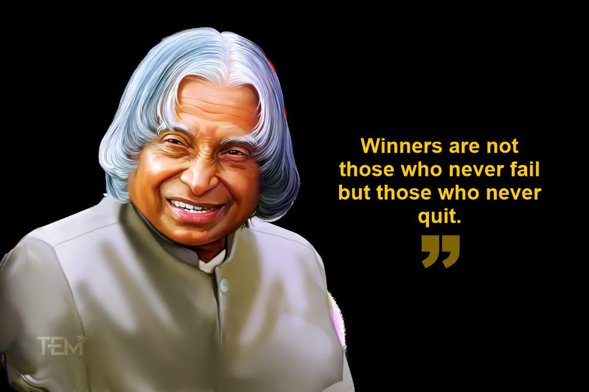

Dr. Kalam was a visonary, a scientist, the President of a countryand a
great human being. From satellites to local healthcare, his contributions
will always be worthy of mention when we talk of science and technology in
India.
Here's a brief life and history of Dr. Kalam's life:
Avul Pakir Jainulabdeen Abdul Kalam (15 October 1931 – 27 July 2015) was
an aerospace scientist who served as the 11th President of India from 2002
to 2007. He was born and raised in Rameswaram, Tamil Nadu and studied
physics and aerospace engineering. He spent the next four decades as a
scientist and science administrator, mainly at the Defence Research and
Development Organisation (DRDO) and Indian Space Research Organisation
(ISRO) and was intimately involved in India's civilian space programme and
military missile development efforts. He thus came to be known as the
Missile Man of India for his work on the development of ballistic missile
and launch vehicle technology. He also played a pivotal organisational,
technical, and political role in India's Pokhran-II nuclear tests in 1998,
the first since the original nuclear test by India in 1974.
Kalam was elected as the 11th President of India in 2002 with the support
of both the ruling Bharatiya Janata Party and the then-opposition Indian
National Congress. Widely referred to as the "People's President", he
returned to his civilian life of education, writing and public service
after a single term. He was a recipient of several prestigious awards,
including the Bharat Ratna, India's highest civilian honour.
While delivering a lecture at the Indian Institute of Management Shillong,
Kalam collapsed and died from an apparent cardiac arrest on 27 July 2015,
aged 83. Thousands including national-level dignitaries attended the
funeral ceremony held in his hometown of Rameshwaram, where he was buried
with full state honours.
Other significant contributions by Dr. Kalam's are:
He was the Project Director in ISRO to help develop India's first
indigenous Satellite Launch Vehicle
At a time when India had hardly dreamt of its own Satellite Launch
Vehicle (SLV), Dr. Kalam's efforts and hard work for over a decade, made
it possible for us to develop our first indigenous SLV. SLV III injected
Rohini satellite in the near earth orbit in July 1980 making India an
exclusive Space Club member.
He also became the Project Director for two missile projects whose
aim was to develop ballistic missiles from the technology of the
successful SLV programme.
After the success of the SLV programme, Dr. Kalam also became the
director of two projects, Project Devil and Project Valiant. In the
1970s, the goal of Project Devil was to produce a short-range
surface-to-air missile. Although discontinued in 1980 without achieving
full success, Project Devil, led to the later development of the Prithvi
missile.
He took up the responsibility of developing Indigenous Guided
Missiles at DRDO.
After working for two decades in ISRO, Dr. Kalam was appointed as the
CEO of Integrated Guided Missile Development Programme (IGMDP). He was
responsible for the development and operationalisation of AGNI and
PRITHVI missiles.This also earned him the title of 'Missile Man of India'.
He was the brain behind multiple nuclear tests carried out at Pokhran
in 1998 which made India a nuclear weapon state.
Dr. APJ Abdul Kalam was the Scientific Adviser to the Defence Minister
of India between 1992 and 1999 when India went ahead with the nuclear
explosions at Pokhran. He supervised the Pokhran II explosions as the
CEO of DRDO. While camping in the Thar desert for over a fortnight, he
said: "The testing was a 'defining moment' in the country's history,
next only to adopting the path of economic liberalisation in 1991."
He helped design a cost-effective coronary stent known as
'Kalam-Raju-Stent' making healthcare accessible to all.
Dr. Kalam collaborated with cardiologist B. Soma Raju for the
development of the famed 'Kalam-Raju-Stent' for coronary heart disease.
The device was introduced in the market in 1994, and led to reduction of
prices of imported coronary stents in India by more than 50 percent. The
upgraded models of this stent are now available in the market.
He was deeply involved in the country's Light Combat Aircraft
project
Since passing out of the Madras Institute of Technology where he
specialised in Aeronautical Engineering, President Kalam had been
associated with avionics. In particular, he was deeply involved with the
country's Light Combat Aircraft project. He also became the first Indian
Head of State to fly a fighter plane.
Dr. Kalam and Dr. Soma Raju, came up with a rugged tablet computer in
2012 to take care of the health of underprivileged people in rural
India.
After the success of Kalam- Raju, he along with the cardiologist, Soma
Raju developed a tablet that was aimed at arming healthcare workers at
the primary level to respond to emergency medical situations.
He was the driving force behind the development of lightweight
callipers for patients with motor disabilities.
While India has been declared polio free by the WHO, back in 1995 and
1996, Dr. APJ Abdul Kalam and his team worked endlessly to produce
orthosis callipers that weighed 1/10th of the weight of those that were
available in the market. These floor reaction calipers made movement and
walking less painful and cumbersome, allowing kids to walk more freely
and fluidly without much help.
"He used the spotlight to urge India to build up its military strength
and to free itself from the threat of domination by outside forces,"
-- The New York Times obituary
If you have time, you should read more about this incredible human being
on his
Wikipedia entry.